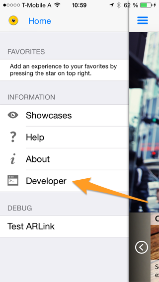
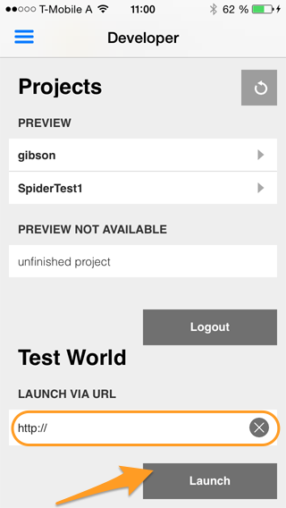
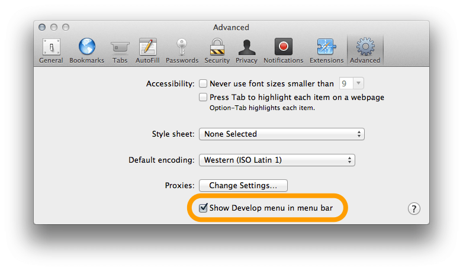
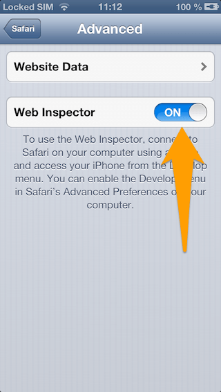

Development Workflow
The following section describes a default development workflow for writing AR content using the ARchitect JavaScript API. It demonstrates the code test and debug cycle and provides useful tips for each step.
Code, Test, Debug
- Write your HTML, JavaScript and CSS using the text editor of your choice
- Test in your desktop browser
- Debug in your desktop browser using e.g. WebInspector
- Test on a physical device
- Debug on a physical device
- Rinse and repeat
You can use any editor for writing the ARchitect World. We particularly like Sublime, which has a great selection of plugins for web developers.
The next step is to test it out in a desktop browser. To have the ARchitect JavaScript API available in the desktop browser you'll need to include the ARchitect Desktop Engine (ADE). See the chapter ARchitect Desktop Engine for instructions on how to use it. While this is limited in visualizing the experience, it greatly helps in finding errors in the JavaScript code and reduces the time it takes to see effects of changes you have made to the HTML and CSS parts. Desktop browsers come with great debugging tools (e.g. Chrome's DevTools ) that allow you to easily debug your JavaScript code and that you should make full use of when debugging ARchitect Worlds.
Once you have verified the JavaScript is working properly you should test it on the device of your choice. Either start your application that loads the ARchitect World or run it inside the Wikitude World Browser app.
Run the ARchitect World within the Wikitude World Browser on iOS
ARchitect Worlds on an iOS device can be tested using the Wikitude World Browser for iOS. Once Wikitude is running, tap on the menu button in the upper left corner of the screen.
Then tap the Developer button to open the developer login page.

Enter your username and password of your Wikitude developer account and tap the login button to get to your user account. If you don't have a developer account yet register at the Wikitude developer page.
In this view, tap on the text box below the Launch via URL label and enter the URL of your ARchitect World. After tapping the Launch button your AR experience will be opened in Wikitude.

Once your creation is running on the device you can verify if the visual experience is represented as intended and functions as expected on the device. If you run into any problems we suggest going back to the desktop browser first and debug using the debugging tools available in desktop browser. If this is not an option you can use on-device Debugging. This is currently best supported on iOS but only works if you run your application from Xcode. See the following section on on-device debugging for more details.
Additionally you can write log messages to the ARchitect logging console which you may then activate by calling AR.logger.activateDebugMode(). See the logger section for more details.
On-Device Debugging
Besides the possibility to debug ARchitect Worlds within the desktop browser using ADE and by using the AR.logger on the device, it is also possible to use the familiar Web Inspector tools to debug while running your ARchitect World on your device.
Note: It is still a good idea to test drive your World in ADE first as the code-test-debug cycle is still faster in the desktop browser.
In order to be able to debug your ARchitect World, you need to assure that you have the following Software running on your Mac.
- Xcode 4.5 or above
- iOS 6 SDK or above
- Safari 6.0 or above
- Enable ‘Developer mode’ in Safari
- Enable the Web Inspector on your iOS device. To do this go to
Settings->Safari->Advanced
 
Create a separate JavaScript file that contains your ARchitect World code. JavaScript code inside a script tag of the .html file, will not be able to be debugged.
Starting a new debug session
To start a new debug session, start Safari 6 and open your ARchitect World. After the App has been started on your iOS device, click on the Develop menu option in Safari. From the drop down menu select your iOS device along with the UIWebView instance which is
currently available. After you have selected the UIWebView instance, the Web Inspector will appear. For more details on how the Web Inspector is structured, please have a look at the WWDC Session videos from 2012 about debugging UIWebViews.
Setting a breakpoint in JavaScript
To set a breakpoint, select the resource page and the file you want to debug. After you have selected the file, set a breakpoint like as you would do in Xcode. Once the JavaScript execution stops at the breakpoint, you’ll have the same controls in the lower right corner like as in Xcode to step into a function or continue the JavaScript execution. For more details, please have a look at the WWDC Session videos from 2012 from 2012 about debugging UIWebViews.
Profile JavaScript execution and resource loading
The Web Inspector also allows you to profile the JavaScript execution as well as the resource loading. To profile the resource loading, press cmd + R on your keyboard. This will cause a reload of the UIWebView and the profiling starts to load automatically. If you want to profile your JavaScript code, simple press the profile button in the Profile section.
When you have finished testing, stop the profiling and a detailed profile is shown in the Web Inspector. Note: cmd + shift + R will reload the UIWebView, ignoring any cached data.